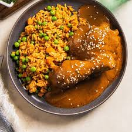
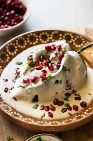
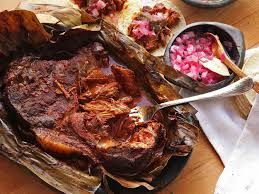
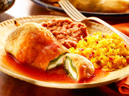

Tacos al Pastor
Marinated pork cooked on a vertical rotisserie, served on corn tortillas with pineapple, onions, cilantro, and salsa.
Mexico City

Mole Poblano
A rich sauce made from chocolate, chili peppers, and numerous spices. Traditionally served over turkey or chicken.
Puebla

Chiles en Nogada
Poblano chiles filled with picadillo, topped with walnut-based cream sauce and pomegranate seeds, representing the Mexican flag colors.
Puebla

Cochinita Pibil
Slow-roasted pork marinated in citrus juice, achiote paste, and wrapped in banana leaves. Traditionally from the Yucatán Peninsula.
Yucatán
Pozole
A traditional soup made with hominy, meat (usually pork), garnished with shredded lettuce, radishes, onion, lime, and chili.
Jalisco

Chiles Rellenos
Poblano peppers stuffed with cheese (or meat), battered with egg and fried, then served with a tomato-based sauce.
Central Mexico